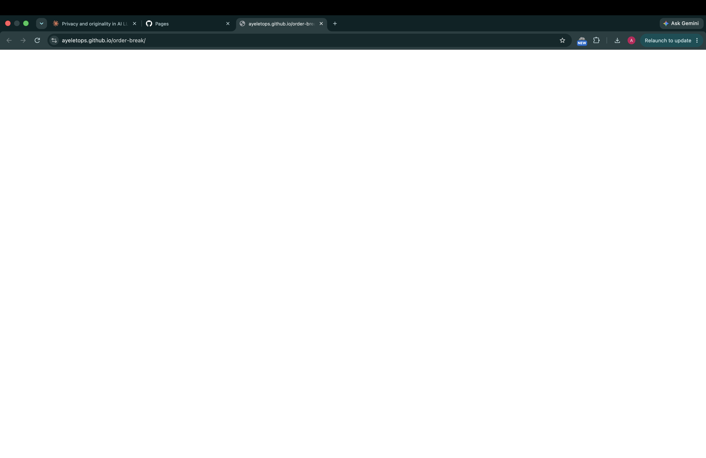

How this was made: the page the machine proposed, what I took from others, and every decision as it happened.
The default
Hi, I'm Ayelet 👋
Creative designer crafting meaningful
digital experiences that inspire.
Asked for my ID, the machine returns this: a gradient, a rounded card, a waving hand, "meaningful experiences". Order without a decision, the average of everyone. I kept it, and I blacked it out.
Taken from
The Work board mixes my own image collection with real scans of tickets, receipts, telegrams, envelopes, matchbooks and handwriting from Wikimedia Commons (public domain and Creative Commons), public-domain early cinema (Muybridge, Méliès, the Kinetoscope). Every credit ↗

Log
Loading the log…